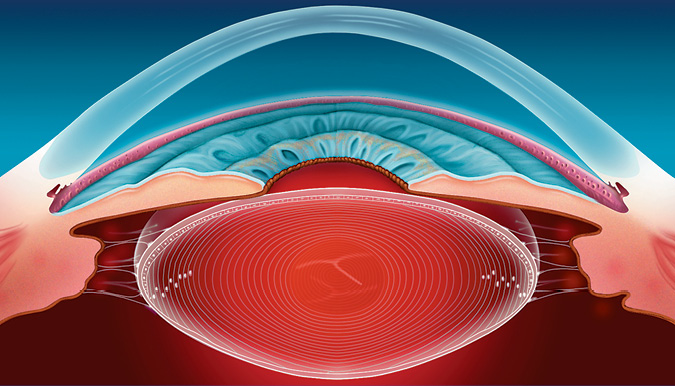
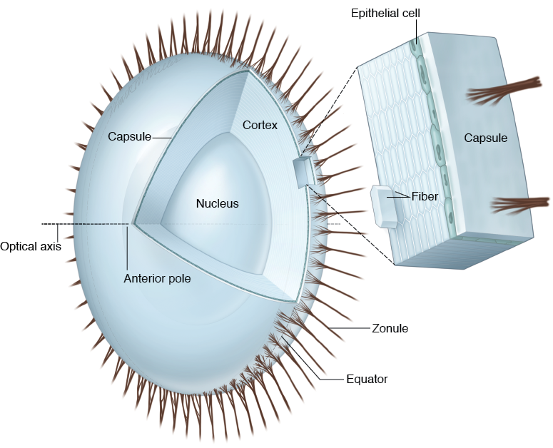
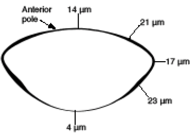
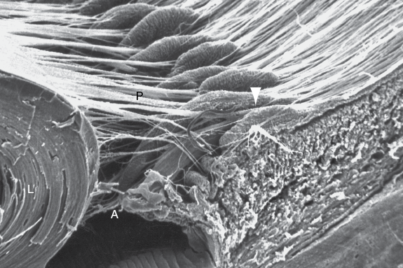
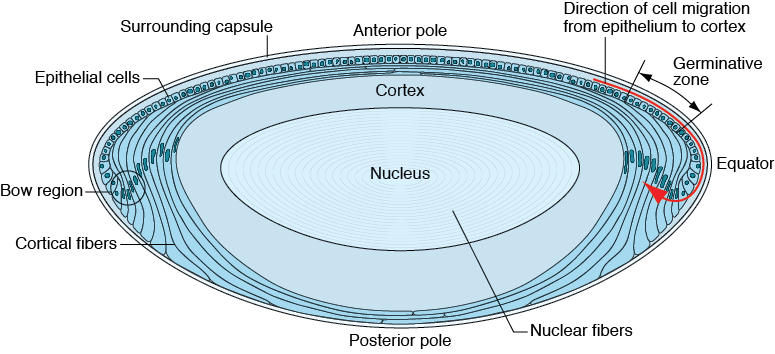

CHAPTER 2
Anatomy
This chapter includes a related video. Go to www.aao.org/bcscvideo_section11 or scan the QR code in the text to access this content.
Highlights
See BCSC Section 2, Fundamentals and Principles of Ophthalmology, for additional discussion and illustrations of the topics covered in this chapter.
Normal Crystalline Lens
The crystalline lens is a transparent, biconvex structure located posterior to the iris and anterior to the vitreous body (Fig 2-1). The lens is suspended by numerous fibers that together are called the zonule. Collectively, this ring of fibers (zonule of Zinn) attaches the lens to the ciliary body and can be considered a ligament. Components of the lens include the capsule, the epithelium, the cortex, and the nucleus (Fig 2-2).
An imaginary line called the optic axis joins the anterior and posterior poles of the lens, passing through them. Hypothetical lines on the lens surface that pass from one pole to the other are referred to as meridians. The equator of the lens is its greatest circumference.
The functions of the lens are
Lacking a blood supply and innervation after fetal development, the lens depends entirely on the aqueous humor to meet its metabolic requirements and also to remove its wastes.
The lens is able to refract light because its index of refraction—normally about 1.4 in the center and 1.36 in the periphery—is different from that of the aqueous and vitreous humors surrounding it. In its nonaccommodative state, the lens contributes approximately 20.00 D of the approximately 60.00 D of convergent refractive power of the average human eye; the air–cornea interface provides the rest, about 40.00–45.00 D.
The lens continues to grow throughout an individual’s life. At birth, it measures about 6.4 mm equatorially and 3.5 mm anteroposteriorly and weighs approximately 90 mg. The lens of an adult typically measures 9–10 mm equatorially and about 5 mm anteroposteriorly and weighs approximately 255 mg. With increasing age, the relative thickness of the cortex increases; the lens also adopts an increasingly curved shape, so that older lenses have more refractive power. However, the index of refraction of the lens decreases with increasing age, probably as a result of the increasing presence of insoluble protein particles. Thus, with increasing age, the eye may become either more hyperopic or more myopic, depending on the balance of these opposing changes.
Capsule
The lens capsule is an elastic, transparent basement membrane that is composed of type IV collagen and other matrix proteins and laid down by the epithelial cells. The capsule contains the lens substance and is capable of molding it during accommodative changes. The outer layer of the lens capsule, the zonular lamella, also serves as the point of attachment for the zonular fibers. The lens capsule is thickest in the anterior and posterior preequatorial zones and thinnest at the central posterior pole, where it may measure only 2–4 µm (Fig 2-3). At birth, the anterior lens capsule is considerably thicker than the posterior capsule; its thickness increases throughout a person’s life.
Zonular Fibers
As mentioned, the lens is supported by a system of fibers (the zonule) that originate from the basal lamina of the nonpigmented epithelium of the pars plana and pars plicata of the ciliary body. These zonular fibers, which are located in the valleys between the ciliary processes, consist of microfibrils composed of elastic tissue. They insert at discrete points on the lens capsule 1.5 mm anterior to the equator and 1.25 mm posterior to the equator (Fig 2-4). With increasing age, the equatorial zonular fibers regress, leaving separate anterior and posterior layers that appear in a triangular shape on cross section of the zonular ring. The fibers are 5–30 µm in diameter; on light microscopy, they are revealed as eosinophilic structures that have a positive periodic acid–Schiff (PAS) reaction. Ultrastructurally, the strands, or microfibrils, composing the fibers are 8–10 nm in diameter, with 12–14 nm of banding (Video 2-1).
VIDEO 2-1 Endoscopic view of ciliary body, zonular fibers, and lens capsule.
Courtesy of Charles Cole, MD.
Go to www.aao.org/bcscvideo_section11 to access all videos in Section 11.
Lens Epithelium
Immediately posterior to the anterior lens capsule is a single layer of epithelial cells. These cells are metabolically active and carry out all normal cell activities, including biosynthesis of DNA, RNA, protein, and lipid. They also generate adenosine triphosphate to meet the energy demands of the lens. The epithelial cells are mitotic; the greatest activity of premitotic (replicative, or S phase) DNA synthesis occurs in a ring around the anterior lens known as the germinative zone. The newly formed cells migrate toward the equator, where they differentiate into fibers. This area, called the bow region, is where the epithelial cells begin the process of terminal differentiation into lens fibers (Fig 2-5).
During this differentiation, perhaps the most dramatic morphologic change occurs when the epithelial cells elongate to form lens fiber cells. This elongation is associated with a tremendous increase in the mass of cellular proteins in the fiber cell membrane. At the same time, the cells lose organelles, including nuclei, mitochondria, and ribosomes. The loss of these organelles is optically advantageous, because light passing through the lens is no longer absorbed or scattered by these structures. However, because these new lens fiber cells lack the metabolic functions previously carried out by the organelles, they are now dependent on glycolysis for energy production (see Chapter 3 in this volume).
Nucleus and Cortex
As new fibers are laid down, no cells are lost from the lens. The new fibers crowd and compact the previously formed fibers; the older layers are located toward the center. The oldest layers, the embryonic and fetal lens nuclei, were produced during embryogenesis and persist in the center of the lens (see Chapter 4, Fig 4-1). The outermost fibers are the most recently formed and make up the cortex of the lens.
Lens sutures (see Chapter 4, Fig 4-1) are formed by the interdigitation of the anterior and posterior tips of the spindle-shaped fibers. Multiple optical zones, as well as Y-shaped sutures located within the lens nucleus, are visible on slit-lamp biomicroscopy. (See Chapter 4 in this volume for further discussion of the embryonic nucleus and lens sutures.)
Strata of epithelial cells with differing optical densities are laid down throughout life, creating the zones of demarcation between the cortex and the nucleus. However, there is no morphologic distinction between the cortex and the nucleus; rather, the transition between these regions is gradual. Although some surgical texts and this volume make distinctions between the nucleus, epinucleus, endonucleus, and cortex, these terms relate only to potential differences in the behavior and appearance of the material during surgical procedures.
Kuszak JR, Clark JI, Cooper KE, et al. Biology of the lens: lens transparency as a function of embryology, anatomy and physiology. In: Albert D, Miller J, Azar D, Blodi B, eds. Albert & Jakobiec’s Principles and Practice of Ophthalmology. 3rd ed. Saunders; 2008: vol 1, chapter 104.
Snell RS, Lemp MA. Clinical Anatomy of the Eye. 2nd ed. Blackwell Science; 1998: 197–204.

Figure 2-1 Cross section of the human crystalline lens, showing the relationship of the lens to surrounding ocular structures. (Illustration by Christine Gralapp.)

Figure 2-2 Structure of the normal human lens. (Illustration by Mark Miller.)

Figure 2-3 Schematic of the adult lens capsule showing the relative thickness of the capsule in different zones. (Illustration by Christine Gralapp.)

Figure 2-4 Scanning electron micrograph of a sagittally cut specimen of the ciliary body, zonular fibers, and lens (L) of the eye of a 4-year old rhesus monkey. The anterior (A) and posterior (P) zonules are attached to the zonular plexus (arrowhead) posteriorly in the valleys between the ciliary processes. (Courtesy of Johannes W. Rohen, MD, PhD, and Cassandra Flügel-Koch, MD, PhD.)

Figure 2-5 Schematic of the mammalian lens in cross section. Arrow indicates the direction of cell migration from the epithelium to the cortex. (Illustration by Mark Miller.)